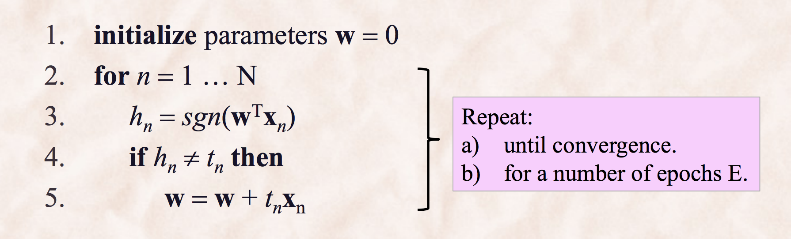
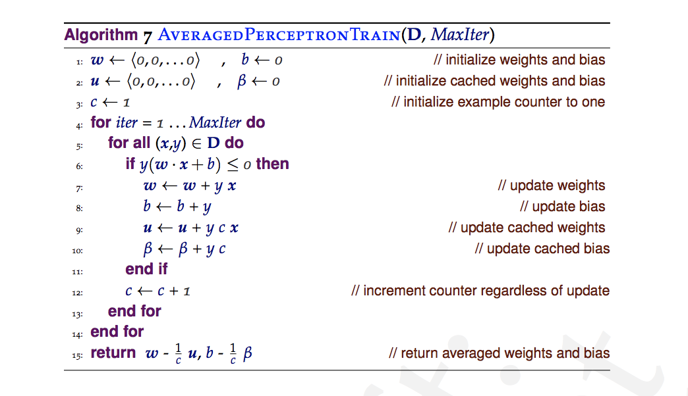
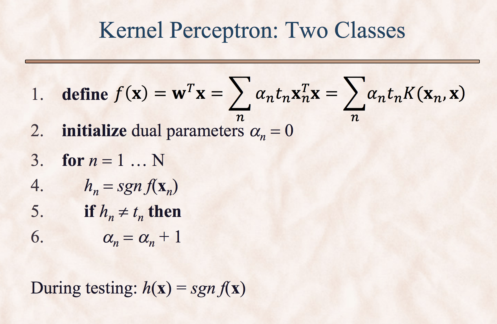
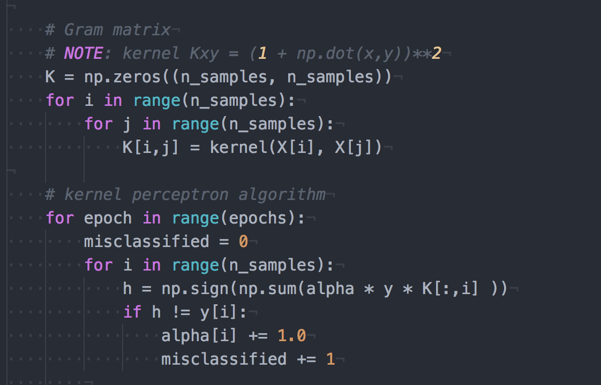

Qn1 :Perceptron Convergence¶
Part 1: Previous homework 5 question 5a¶
For 5(a), we showed that the perceptron algorithm hits the same weight vector at different epochs during training and thus it will run forever.
epoch: 2 ----------------------------------------
2-0: misclassified? y w: [ 1. -1.5 1. 1.5]
2-1: misclassified? n w: [ 1. -1.5 1. 1.5]
2-2: misclassified? y w: [ 2. 0. 1. 0.]
2-3: misclassified? n w: [ 2. 0. 1. 0.]
2-4: misclassified? y w: [ 1. -1.5 1. 0. ]
2-5: misclassified? n w: [ 1. -1.5 1. 0. ]
2-6: misclassified? y w: [ 0. -1.5 1. 1.5]
2-7: misclassified? n w: [ 0. -1.5 1. 1.5]
epoch: 3 ----------------------------------------
3-0: misclassified? y w: [ 1. -1.5 1. 1.5]
3-1: misclassified? n w: [ 1. -1.5 1. 1.5]
3-2: misclassified? y w: [ 2. 0. 1. 0.]
3-3: misclassified? n w: [ 2. 0. 1. 0.]
3-4: misclassified? y w: [ 1. -1.5 1. 0. ]
3-5: misclassified? n w: [ 1. -1.5 1. 0. ]
3-6: misclassified? y w: [ 0. -1.5 1. 1.5]
3-7: misclassified? n w: [ 0. -1.5 1. 1.5]
Here, after epoch 2, all the epochs have the same weight vectors and the perceptron will never converge on this dataset.
Part 2: Previous homework 5 question 5b¶
Here, for the dataset in homework 5 ../data/ex5/ex5.txt we used kernel perceptron to classifity that non-linearly separable data.
After running kernel perceptorn with quadratic kernel, we found that the total number of epoches need to be run before convergece is.
Kernel Perceptron converged after: 4 iterations
alpha = [ 4. 1. 2. 3. 3.]
Kernel Perceptron Accuracy = 100.00 % (8 out of 8 correct)
Part 3: Vanilla, Averaged, and Kernel Perceptrons¶
In the file exercise5.py I completed following functions:
(a) perceptron train(data, labels, epochs) trains the vanilla perceptron algorithm and returns the weight vector.
(b) aperceptron train(data, labels, epochs) trains the average perceptron algorithm and returns the average weight vector.
(c) perceptron test(w, data) test a perceptron with weights w and returns a vector with the labels on the test examples in data.
(d) kperceptron train(data, labels, epochs, kernel) trains the kernel perceptron algorithm and returns the vector α of parameters.
(e) kperceptron test(alpha, data, kernel) tests the kernel perceptron algorithm with parameters alpha and returns a vector with the labels on the test examples in data.
The vanilla perceptron algorithm used is as follows:
For the averaged perceptron, I used the algorithm from Daume book,
For kernel perceptron, I first created the Gram matrix and then implemented the algorithm.
 